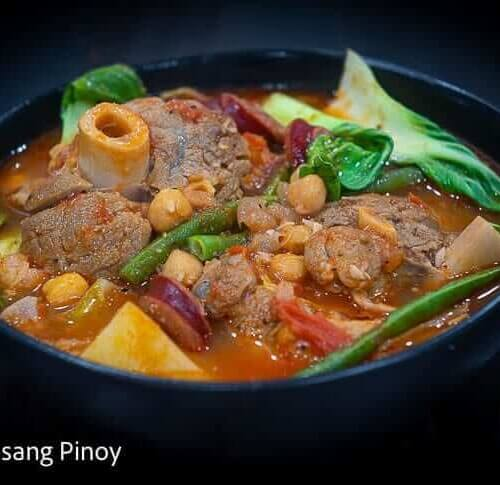

Kaldereta
Starting with the heavy-hitting heavyweight of the four, traditionally made with goat meat (or beef), featuring a luxurious, aggressively rich sauce thickened with liver spread and peanut butter, then punched up with bird's eye chilies, olives, and sometimes cheese.
Afritada
The wholesome, easy-going sibling that keeps things clean and straightforward with chunky cuts of chicken or pork, large potato chunks, carrots, and green peas simmering in a bright, fruity tomato sauce without any liver-spread complication


Menudo
The chaotic, bite-sized champion of the family dinner table, characterized by pork shoulder, tiny cubes of potatoes and carrots, hot dog slices, and a sneaky undertone of pork liver that melts into the broth to anchor the bright tomato acidity. Some people include raisins in the recipe, a true culinary crime in and of itself.
Mechado
The sophisticated beef dish named after the traditional Spanish technique of larding lean cuts with strips of fat, slow-cooking into a rich, dark, savory gravy powered by soy sauce, calamansi, and bay leaves rather than a bright soup base.


Honorable Mention: Pochero
The sweet-savory tropical imposter that bends the rules by pairing a light tomato broth with beef shank, chickpeas, sweet potatoes, cabbage, and unmistakable slices of saba bananas that break down to lend the dish its signature sweetness. This one is more of a soup than a stew, and to be perfectly blunt, you would need to have a profound lack of sense of taste to not tell the difference.